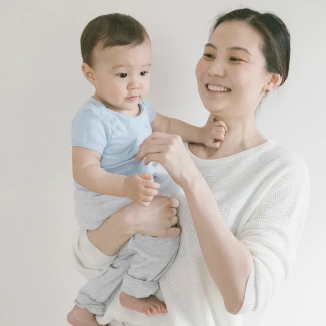
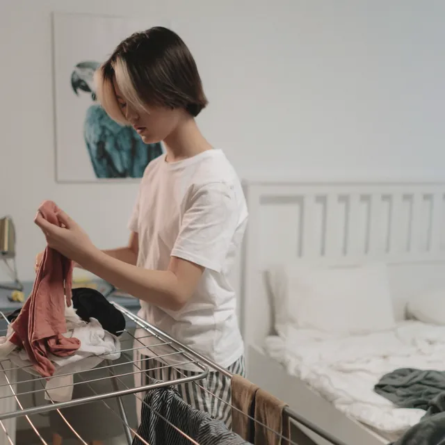
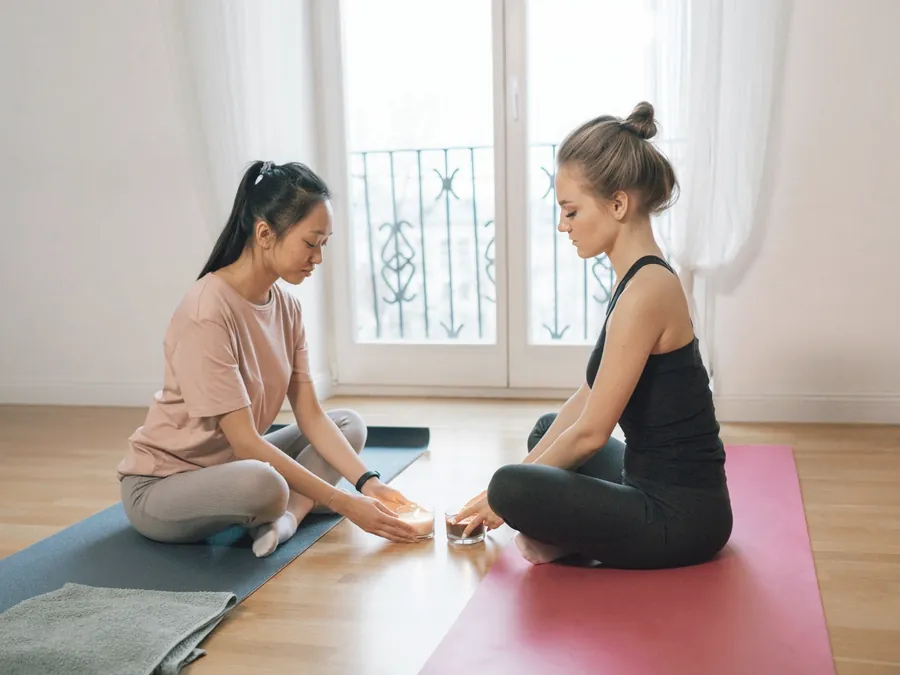
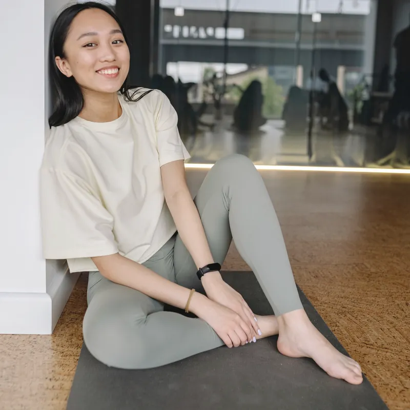
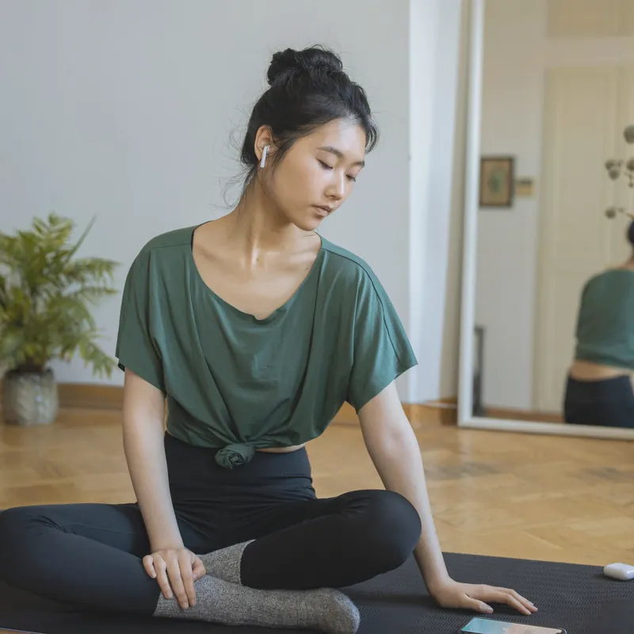
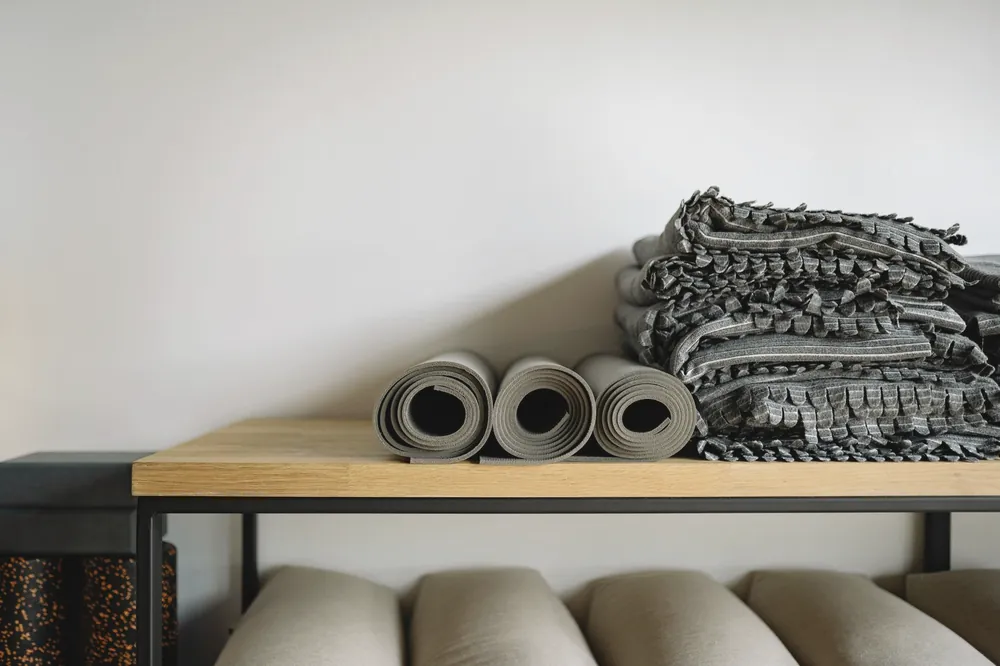
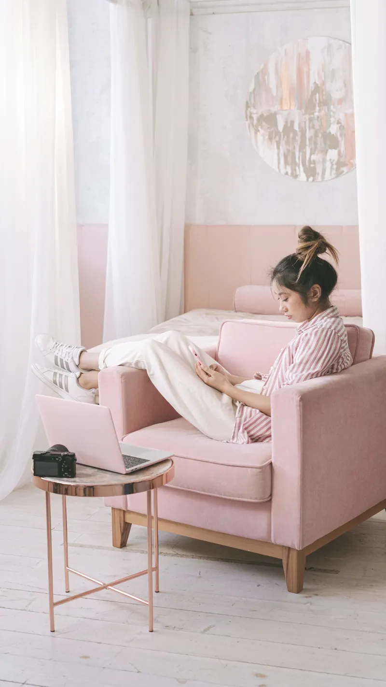

数字で見る
女性が自覚する症状で
いちばん多いのは腰
国の調査で、全年齢の女性が自覚している症状を数えると、腰痛が1位でした。
40代では半数近くが治療が必要なほどの腰痛を経験しています。
- 47.2%治療が必要なほどの腰痛を経験した40代女性
- 47.0%そのうち毎年のようにくり返す人
出典：日本腰痛学会「腰痛に関する全国調査 報告書 2023年版」（2024年）。治療には、はり・マッサージを含みます。
FIG.01女性が自覚している症状の上位
（全年齢・人口1,000人あたり）
出典：厚生労働省「2025（令和7）年 国民生活基礎調査の概況」
こんな場面で
こんな場面で
腰が気になっていませんか
FIG.02腰が気になりやすい、暮らしの3つの場面
-
座る前かがみで
何時間も -
抱く重さを片側で
支え続ける -
立つ台所で
少し前かがみ
-
7:00–8:30

抱く朝の支度と抱っこ
重くなる子どもを片側で抱え続ける。おむつ替えや着替えも前かがみが続きます。
-
9:00–18:00
座る座りっぱなしの仕事
気づくと同じ姿勢のまま何時間も。
立ち上がる瞬間に腰を押さえてしまう。 -
19:00–21:00

かがむ夜の家事と片づけ
夕食のあとに洗いものと洗濯もの。
夜になるほど腰の重さが増していく。
CHECK
あなたの腰に
当てはまるものは？
タップしてチェックできます
当てはまったのは 0 / 6
その理由を図で見てみましょう
実は…
痛いから動かない
それが悪循環の
入り口になることも
- じっとする痛みがこわくて、腰を守るように動かなくなる
- かたまる動かない時間が長いほど、体がこわばりやすい
- こわくなるこわばった腰を動かすのが、さらに不安になる
腰が弱いせいではありません
FIG.03腰痛でくり返しやすい悪循環
痛みが強くならない範囲で
少しずつ動いて悪循環から抜ける
痛みへの恐怖から動きを避けすぎることは、腰痛が長引くことと関係するとされています。
参考：日本整形外科学会・日本腰痛学会 監修「腰痛診療ガイドライン2019」
sasae のヨガ
腰だけを見ないで
支えるまわりから動かす
腰は、背中とお尻・股関節のあいだにある場所です。
sasae では腰のまわり全体をいっしょに動かします。
医療行為ではなく、腰痛の治療や効果を約束するものではありません。
FIG.04レッスンで動かすところ・無理に動かさないところ
- 1背中・胸まわりゆっくり動かす
- 2腰反らさない・ひねらない
- 3お尻・股関節動かして支えにする
- 4お腹の奥呼吸でふくらませる

01見る
1〜3名だから
動き方をひとりずつ見ます
はじめに、その日の腰の様子とつらくなる場面をうかがいます。
レッスン中も、腰に負担のかかりそうな動きがあればその場で声をかけます。

02決める
こわくない範囲を
その日ごとに決めます
腰の具合を0〜10で聞いてから、動きの大きさを選びます。
強くひねる・深く反るポーズは、はじめは行いません。痛みが出たら、その場で止めます。
体がかたくても、今の体のまま始められます。
FIG.05痛みのものさし
0510
気にならないとても痛い

03持ち帰る
おうちで続ける
3分の動きを1つ渡します
その日の動きから、家でできるものを1つだけ選んで紙に書きます。
忙しい日も、歯みがきのあとの3分なら続けやすい長さです。
ほかの方法とくらべて
ゆるめてもらうのと
自分で動かすのは別のこと
FIG.06腰のためにできる3つの方法のちがい
| 整体・ マッサージ | 動画・ アプリ | sasae | |
|---|---|---|---|
| 動かし方 | ゆだねる | 自分で | 自分で |
| 見る人 | 施術者 | なし | 講師 |
| その日の調整 | 施術者 | 自分 | いっしょに |
| 家での練習 | — | 動画 | 3分の動き |
どれが良い・悪いではありません。整体やマッサージと組み合わせて通う方もいます。
はじめての60分
話して・動いて・休んで
家でやることまで
FIG.0760分の時間の配分
0分30分60分
- 00分
お話と動きの確認
腰がつらくなる場面や通院のことを聞き、立つ・座る・かがむを見ます。
- 10分
呼吸でお腹の奥を感じる
あお向けで息を吐きながら、お腹の奥がふくらむ・しぼむのを感じます。
- 15分
床と椅子で動く
背中・お尻・股関節から小さく動かします。
痛みのものさしで止めどころを決めます。 - 45分
体をあずけて休む
ボルスター（体をあずける大きなクッション）に寄りかかって10分。動いたあとの腰の感じを確かめます。
- 55分
おうちの3分を決める
家で続ける動きを1つ選び、紙に書いてお渡しします。LINEで質問もできます。
FIG.08こんなときは、ヨガより先に病院へ
- 安静にしていても、痛みが軽くならない
- 痛みが日ごとに強くなっている
- 熱がある
- 脚がしびれる・力が入りにくい
- 尿もれなど、おしっこの様子がいつもと違う
- 胸の痛みがある、急に体重が減った
- 急に強く痛んだ直後（ぎっくり腰など）
通院中・服薬中・手術歴のある方、妊娠中・産後の方は、主治医に相談してからお越しください。
レッスン中に痛みやしびれが出たら、すぐに中止します。
参考：日本整形外科学会「腰痛」ほか
通っている方の声
つらい日も
無理なく通えています
30代事務職・通って3か月
休憩の3分が習慣になりました
夕方になると、腰を気にしながら座っていました。
休憩中にできる動きを教わり、仕事の合間に続けています。
30代1歳の子どもの母・通って2か月
家でやることが1つ決まっている
産後から腰が気になり、何をしたらいいか分かりませんでした。
家でやる3分が決まっているので、迷わずに済みます。
40代販売職・通って5か月
つらい日には、つらい日の内容がある
つらい日は休むしかないと思っていました。
その日の具合で内容を変えてくれるので、無理なく通えています。
個人の感想です。感じ方には個人差があります。
講師
腰がつらかった私が
こわがらずに動けるまで
小野寺 あかりyoga studio sasae 代表
保育士として12年、抱っこと前かがみの毎日でした。
30代に入ってから腰の重さが続き、朝の着替えもゆっくりになりました。
病院で大きな異常はないと言われ、できる範囲で動くように言われました。
そのとき選んだのがヨガです。痛みを見ながら少しずつ動くうちに、動くこわさが減っていきました。
同じように腰を気にしながら働く人・育てる人の、相談できる場所でありたいと思っています。
- 全米ヨガアライアンス RYT200（指導者養成の200時間の課程）修了
- 椅子ヨガ・リストラティブヨガ（道具に体をあずけて休むヨガ）講座 修了
- 保育士として12年勤務／ヨガ指導歴6年
よくある質問
はじめる前の
気がかりに
Q腰が痛い日でも参加できますか？
痛みが強くならない範囲で、椅子や道具を使って内容を変えます。当日に痛みが強いときは、月1回まで無料で別の日に振り替えられます。しびれや発熱などがあるときは、先に医療機関に相談してください。
Q通院中でも参加できますか？
主治医に「体を動かしてよいか」を確かめてからお越しください。ぎっくり腰のように急に強く痛んだ直後は参加を控え、まず医療機関に相談してください。
Q体がかたくても大丈夫ですか？
大丈夫です。sasae は柔らかさを目指すヨガではありません。今の体のまま、こわくない範囲で動く練習をします。
Q産後はいつから通えますか？
産後の回復には個人差があります。産後健診などで、医師に運動してよいと言われてからお越しください。
Q整体やマッサージと一緒に通ってもいいですか？
もちろんです。ゆるめてもらうことと、自分で動かす練習は役割がちがいます。組み合わせて通う方もいます。
Q何回くらい通えばいいですか？
決まった回数はありません。1回券でも通えます。続けて通うと決めたときは、4回チケットも選べます。
Q服装や持ち物は？
動きやすい服と飲みものだけで大丈夫です。マット・ボルスター・タオルは無料でお貸しします。更衣スペースもあります。
場所と時間
〇〇駅から徒歩5分
仕事帰りにも寄れる場所

- 場所
- 神奈川県〇〇市〇〇町0-0-0 〇〇ハイツ 1F
〇〇線「〇〇駅」南口から徒歩5分
- 人数
- 女性専用・1回1〜3名・完全予約制
- 定休日
- 水曜・日曜
- 子連れ
- 〇〇
- 持ち物
- 動きやすい服、飲みもの（更衣スペースあり）
FIG.09レッスンの時間
平日の昼は 10:00〜14:00、夜は 19:00〜21:30 のあいだで枠を開けています。
金曜の夜は 20:15 からの1枠です。

ご予約
腰の具合をひとこと
送ってください
ご予約もご相談も、公式LINEから承ります。
登録後に送るのは、この3つだけです。
- 1希望の曜日と時間帯（昼・夜・土曜）
- 2腰がつらくなる場面（座る・抱っこ・立つなど）
- 3通院中かどうか
空き状況をお返事してから確定します。
前日20時までのキャンセルは無料です。